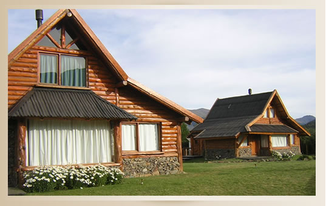

Pagina principal
Inmobiliaria 2008
Pagina principal
Inmobiliaria 2008

Inmueble ubicado en San Martin de los Andes. .Ubicación: Entorno natural privilegiado, rodeado de áreas verdes y vistas abiertas a zonas montañosas. Zona tranquila, ideal para descanso y desconexión .Superficie: Aproximadamente 120–150 m² cubiertos por unidad, sobre lotes amplios con jardín propio. .Cantidad de habitaciones: . 2 a 3 dormitorios . 1 a 2 baños completos . Área social integrada (sala de estar, comedor y cocina) Descripción: Cabañas de estilo rústico construidas en madera maciza, con techos a dos aguas y detalles en piedra natural. Cuentan con amplios ventanales que brindan excelente iluminación natural y conexión visual con el entorno. Diseño funcional y acogedor, ideal tanto para uso residencial como turístico. Perfectas para quienes buscan confort en plena naturaleza sin renunciar a buenas terminaciones.